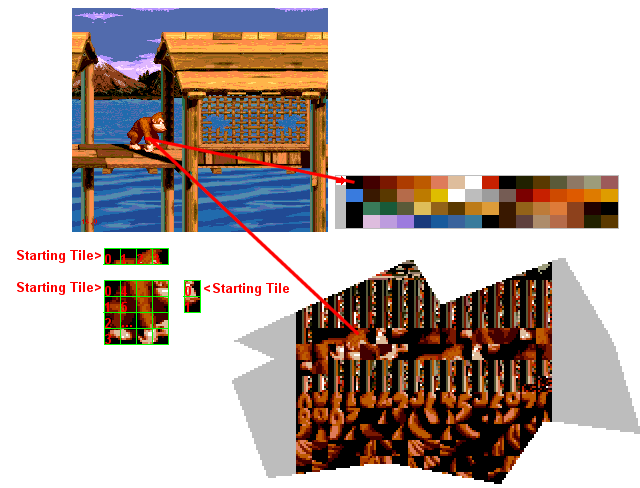

Pic c - Sprites are made of tiles!
When you set a sprite, you only define:
1-Posy.
2-Size (from 1*1 to 4*4 tiles).
3-Priority (HP or LP).
4-Palette (0-3).
5-Flip (V,H,HV).
6-Id of the starting tile (0-2047).
7-Posx.
If you understood the upper things, you may notice that you can't control the ordering of the other tiles (exept the Starting tile).
So, if the sprite is 2*2 and if the starting tile is the number 2 (2nd in the vram), the next tile will be the 3rd and the next one will be the 4th...
The next tiles organisation are up/down > left/right.
Basicaly, if you set the organisation in left/right > up/down, the displayed sprite will be a real mess.
